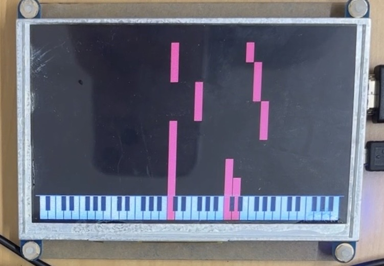
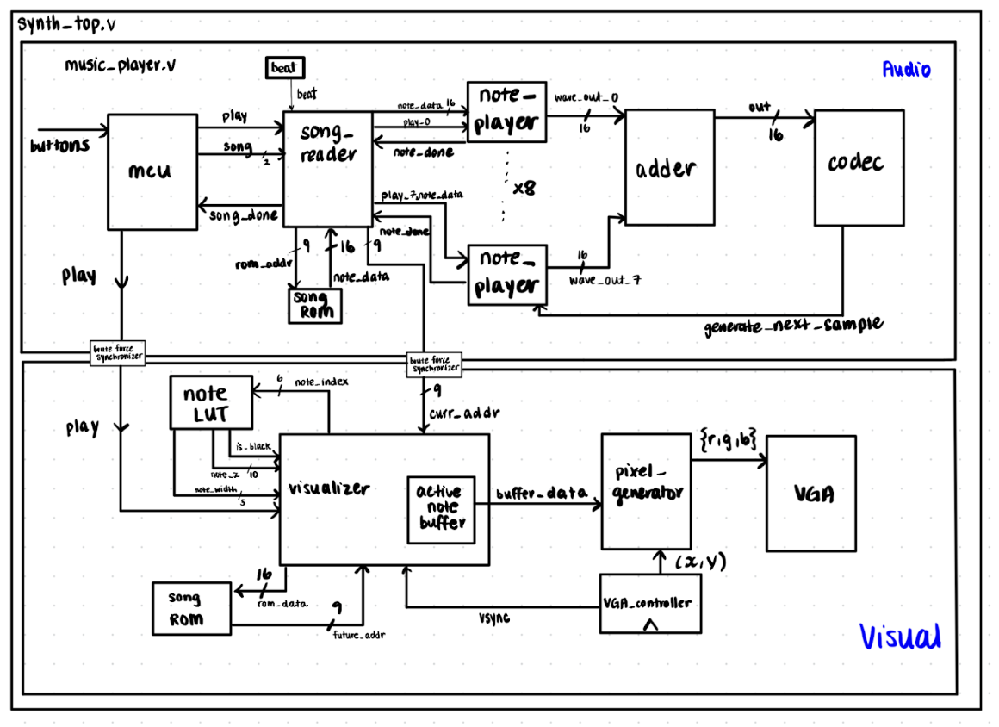
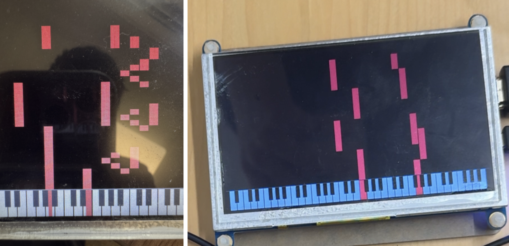

Overview

A hardware-level music synthesizer and visualizer built on a Xilinx FPGA, inspired by Synthesia piano videos.
| Feature | Description |
|---|---|
| Chords | Play up to 8 notes at once |
| Weighted Harmonics | Added 9 harmonics that can be used to create different instruments |
| Multiple Voices | Play 6 different instruments through weighted harmonics and attack/delay/sustain/release (ADSR) envelopes |
| Note Display | Displays notes that are currently playing as chords on a piano and notes in the future yet to be played |
| Piano Synthesia Display | Falling music notes hit a physically accurate piano display at the bottom of the FPGA when the note plays. Different instruments are depicted as different colored blocks. |
System Architecture

The system is divided into two main clock domains: a 100MHz Audio Engine and a 30MHz Visual Engine, bridged safely to prevent metastability.
Audio Engine (100MHz): An MCU manages the global state (Play/Pause/Next), feeding into a song_reader that parses a song ROM. The reader dispatches note data (pitch, duration, instrument) to 8 available note_player modules via a priority encoder. An adder then sums the active waveforms into a single 16-bit audio sample for the codec.
Visual Engine (30MHz): A visualizer module scans ahead in the song ROM to populate a 48-slot active note buffer, which represents the next 48 notes on the screen to be played. It computes the x and y coordinates for every falling block and passes this array to a pixel_generator, which renders the blocks and the piano keyboard to the VGA.
Clock Domain Crossing (CDC): Because the audio and visual systems run at different speeds, critical signals (like play and curr_addr) pass through a brute-force synchronizer (3 DFFs in series) to ensure signal stability across domains.
Implementation
Algorithmic Envelope Generation — To calculate the ADSR volume ramps without using expensive hardware division on the FPGA, we precomputed step-per-beat values. We used two counters per note (one counting up from the start, one down from the end) to determine the current envelope phase, and applied linear volume scaling. For staccato notes shorter than the standard envelope, we implemented a priority mux chain to force a release phase, preventing abrupt, popping audio cutoffs.
The Look-Ahead Visualizer Math — To render notes that haven't played yet, the visualizer FSM rapidly scans up to 105 beats ahead in the ROM while the audio plays. We mapped time to physical screen space using an internal time accumulator:
y = 420 - (time_accum * 4)
This places the current time (play-line) at pixel 420. A note playing in 20 beats is rendered 80 pixels higher on the screen, creating the falling effect.
Challenges
01
Audio Timing Violations
The Problem: Adding the ADSR envelope shaping created a massive 17ns combinational path through the parameter lookups, multipliers, and priority mux chain — violating our strict 10ns clock period.
The Fix: We pipelined the design. By inserting two pipeline DFFs, we split the combinational logic into three manageable stages, successfully meeting timing with only 2 clock cycles of entirely inaudible latency.
02
Visual Rendering Geometry & Clipping
The Problem: Initially, we planned a linear key layout (64 keys evenly spaced across 800 pixels). This caused visual clipping where falling blocks wouldn't illuminate the full key.
The Fix: We engineered a custom Look-Up Table (note_pos_lut.v) to assign variable key starts and widths (19px for white, 13px for black), mimicking a real piano. We gated the illumination logic on an in_black_height check to ensure the wider bottom portion of a white key fully lights up even if the top is adjacent to a black key.

Before (left): falling notes were not lighting up the entire piano key due to clipping from black keys. After (right): the entire key lights up cleanly.
03
IP Core Debugging & Integration
The Problem: During integration, data passed between the 100MHz and 30MHz domains was becoming corrupted despite using the provided brute-force synchronizer code.
The Fix: We audited the underlying synchronizer Verilog and found a bus-width bug in the provided code. Patching this instantly stabilized the cross-domain signals.
// Bug: wire ff1_out, ff2_out; // Fix: wire [WIDTH-1:0] ff1_out, ff2_out;
04
Edge-Case Handling: Song Wrapping
The Problem: We needed to prevent the next song's notes from prematurely appearing on screen when reaching the end of the current track.
The Fix: In visualizer.v, song_num is held constant so it never changes during the fetch loop. We implemented a hard boundary (at_rom_end) so the FSM stops at position 127, ensuring scan_pos never wraps back to 0 inappropriately.
Results & Next Steps
The final system successfully renders complex, multi-track audio synced perfectly to a 60Hz VGA output without dropping frames or breaking timing constraints.
Next Steps for V2:
- Expanded Memory Architecture — Increase the size of the frequency and song ROMs to support longer, more complex tracks (my teammate successfully stress-tested the current limits by mapping Yoasobi's Yoru ni Kakeru).
- Acoustic Modeling — Introduce more complex harmonic weighting, FM synthesis, or low-pass filtering to make the generated instrument voices sound more organic and realistic.